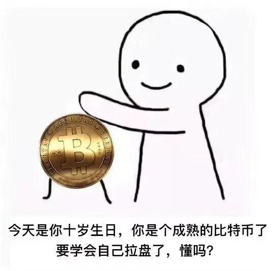
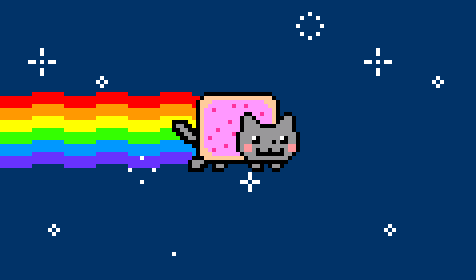

--点击左上蓝字“高小猫”关注我---
微信号：gaoxiaomao88
--点击左上蓝字“高小猫”关注我---
微信号：gaoxiaomao88
在币圈的又一周过去啦~这一周又有发生了很多很多事情，我就随便挑几件来说聊一聊吧。
比特币又创新高啦
这个可能关注币圈的大家都不太意外。我个人认为当前比特币的上涨方式还是比较健康的。一般在牛市的最后，都会有一段加速冲高的过程。过去的一段时间，并没有出现这种过程，因此比特币暂时还没有见顶。
（以上观点仅仅是我个人的观点，并不构成任何投资意见，请自负盈亏，不要来找我算账= =）

参与了Taraxa，Oxygen的打新
Taraxa这个打新有点坑。他们是在自己的网站上进行的，然后在打新前的x小时开放页面。然后所有登录进入这个页面的人都会进入waiting room，然后当打新正式开放的时候，每个在waiting room里的人都会随机获得一个序号。
然后越是序号小，越是可以优先购买Taraxa这个币。问题是，并不是每个通过KYC的账号，一个账号抽一个序号，而是每开一个浏览器的进程，就可以抽一个不同的序号。
这直接导致了有人可以开100个浏览器的进程进去抽序号。
另外一方面，虽然同时有1万多个人去排了队，最终只有大约前100人获得了购买option C的资格（这个option C购买的代币解锁最快，因此大家普遍认为风险最低）。因此相当于中签率只有1%不到。
Oxygen的打新同时在FTX和Gate上面进行。FTX是每个账号抽签的方式，最终中签率大约1/22。Gate上则是根据所有打新人的金额平均分配，我一个VIP2的账号大约分配到二十几刀的份额，估计最终的利润小于100刀吧。实在是有点不值我准备了那么长时间。
事后总结的话，可能这样子的打新在目前这个阶段的投入产出比有一些低。而且打新逐渐参与的人数也已经迅速增长，除非写一些脚本来刷账号，大规模地参与打新，不然似乎已经不太值得了。
尤其后悔的是，FTX我为了打新，还在某一天凌晨5点起来抽签，因为抽签只有一小时的时间窗口。结果还没抢到，贼后悔。
利用Dego上新做了波段
在群里了解到了Dego上了币安的launchpad。可惜我了解到的晚了，我并没有及时地把我的BNB提出来放回交易所，因此没拿到多少Dego打新的额度。
不过我仔细思考了一下，似乎每次币安launchpad上新的币，开盘后都会暴涨一波。因此我买入了一些Dego，然后在Binance开盘以后卖出了，小小地做了一个波段，稍微赚了一些钱。
当然这么做肯定是有风险的，很有可能币安开盘以后，这个币直接破发，导致币价跌过我的入场价。最好的策略肯定还是在launchpad确定价格之前就买入Dego，只要买入的价格低于launchpad的成本价，就可以稳赚不赔。
大家以后币安launchpad马上要上什么新币，也欢迎多多交流，我觉得在牛市里经常会带来一些好的波段机会，盈亏比不错。
（还有刚刚发现，Dego又在我卖了以后又翻了一倍，看来最近NFT真的太火了。不过这种钱属于超出我认知的钱，不赚也罢）

布局了cyclone.xyz这个项目
这个项目是在Bill the Investor这个群里了解的。
之所以投资这个项目，有两个原因。
一是这个项目的总市值还非常小，目前才只有7个million的市值。相比起来，这个领域的龙头项目，Tornado Cash目前的总市值是1967个million。
二是这个项目很快就会上币安链了，将会成为币安链上第一个混币池项目。到时候币安上的超大流量将会让项目本身起飞。
之所以目前市值这么小，是因为这个项目目前仅仅在IOTX这个链上运行，IOTX这个公链相对来说玩的人还太少了。
这个项目在上了币安链以后我会等一段时间，如果说币安链上面一段时间后这个项目没有人玩（1个月），我可能就会撤出了。
持续关注吧。
卖出了OKT，退出了Xsigma，alchemix.fi的挖矿
OKT退出，并不是说不看好OKT了，而是我对于主链正式开放这件事有些阴影。当年EOS主链开放之前，大家期望都特别高，币价一路狂涨。然后主链开放以后，实际的效果不足当时的预期，币价一下子就崩了。
我觉得现在大家对于OKT的期望也相当高，币价也从我入场的价位上涨了不少。眼看OKT马上就要正式开放，上面的项目们就要发行了，我也会有些担心，会不会最终OKT链的正式开放也会出什么问题。
所以就趁早跑路了= =，赚一个预期的钱。
之所以退出Xsigma挖矿，是因为我觉得有更高收益的矿了。Xsigma的一池我其实早就撤出来了，不过2池我又挖了一段时间，然后最近看2池里的ETH有企稳下降的趋势，我就遵照Bill the Investor的教诲，把Xsigma全部卖掉，彻底撤出来了。回头看看还是蛮明智的，后来Xsigma又继续一路下跌，我也不知道什么时候还能回来了。
而之所以退出alchemix.fi的挖矿，也是类似的原因，觉得他们的收益下降得有点快，而且ALCX在社区里的热度太高了，一开始市值涨得太快，很快就有MakerDao的1/3的总市值了。不过后来稍微有点被打脸，我在卖出ALCX以后，ALCX又涨了50%，不知道后续会怎么样了。不过白嫖矿嘛，不亏。
参与了晓娜区块链的一次社区活动，和晓娜一起参与了对Deri Protocol创始人0x_Alpha的采访
很谢谢晓娜的邀请~我觉得这样的经历还蛮有意思的~~可惜没有录像录下来。Deri Protocol目前在BSC，HECO，ETH链上都有，然后采用的是类似于Hegic的流动性池形式，允许用户在上面做合约交易。
在贝版投资群开了一节加密货币的基础课，讲述如何在区块链行业放贷。
很谢谢贝版老师给我这个机会，也很感谢Sophia帮着我备课，修改课件，也很谢谢群友的捧场。
感觉区块链对于大部分的人来说，还是一个比较新的行业，所以还有大量的普及工作可以去做。
不过正如Naval说的，我们所有的努力都要想办法加上杠杆，所以我也会想办法把我的这方面的effort做成可以复制的材料，这样就不用做很多重复性的工作了。
认识了一位很厉害的股票分析师
在贝版投资群里有人发了一份嘉楠科技的分析报告，我觉得写得特别好。不过有一些细节还需要核实。
后来在群友的帮助下加到了作者的微信，聊了很多细节，聊完以后更加坚定了继续持有嘉楠的信息。
至少在我自己判断比特币见顶之前，我应该会一直持有嘉楠科技的股票。
那篇分析报告的作者真的是一个很神奇的人。。。
一周经验教训总结
这一周我有意识地在让自己关注的东西少下来，因此很多了解到的空投我都没有去橹。毕竟钱是赚不完的，
其实80%的钱都是20%的决策赚的。所以还是要关注可以赚比较多钱的那些effort，力争把这些effort对应的研究做仔细，而不要什么机会都抓。
我总结了一下发现，我自己大部分的钱都来自于BTC，ETH， BNB以及一些小的Defi币种的上涨带来的盈利，还有一大块来自于Defi挖矿的收益。除了这两块以外，其实空投以及一些套利的机会赚到的钱相对来说比较少。
因此这之后我也会逐步缩减后者的相关操作，比如停止打新的这个操作。毕竟相关的努力牵扯了太多的精力了，但是从过去的几次经历来说，效果并不是太好。
而我会更多专注去做的，一个是继续Defi项目的新矿挖掘，另外一个则是找一些盈亏比比较好的短期套利机会来做，还有就是持续关注比特币的牛市何时结束，继续逃顶的准备。随着牛市的末尾逐渐地来临，我也会持续地加强风险意识，逐渐减少我高风险资产的数量，力争做到牛市结束的时候能把大部分的盈利成功保存下来。

扫描关注我